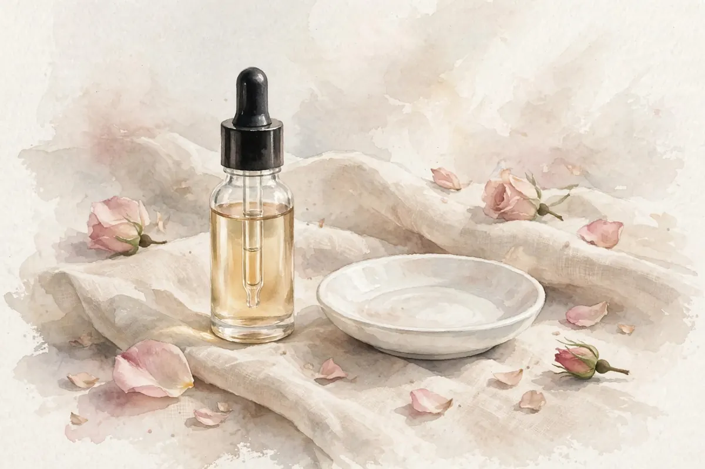

トップ ＞ スキンケア ＞ フェイスオイルの順番と量の目安：表示で読む置き場所と数滴の考え方
フェイスオイルの順番と量の目安：表示で読む置き場所と数滴の考え方

施術の仕事をしていると、お客様から「フェイスオイルって、化粧水の前と後、どっちに使うんですか」と聞かれることがあります。店頭に並ぶフェイスオイルは、スポイト付きの小瓶に入ったものが多く、「数滴」という量の案内と一緒に、使う順番が書かれていることがあります。この記事では、特定の商品の話ではなく、オイルの置き場所と量の目安の考え方を整理します。私自身、新しいオイルを手に取るときは、まずこの表示を確認するようにしています。
オイルの置き場所は、重ねる順番で決まる
スキンケアの手順は、基本的に「水っぽいものから油っぽいものへ」という並びで考えます。化粧水のような水分の多いアイテムを先に使い、オイルやクリームのような油分の多いアイテムをあとに重ねる、という流れです。パッケージの「使用方法」の欄にも、「化粧水のあとにお使いください」「乳液やクリームの前にお使いください」といった順番の案内が書かれていることがあります。
ただし、オイルの種類によって案内が違うこともあります。化粧水の前に使う「ブースター」としての使い方を案内しているものもあれば、最後の仕上げとして使う案内のものもあります。同じ「フェイスオイル」という名前でも、置き場所の案内は商品ごとに違うので、買う前にこの欄を読むのが私のやり方です。手持ちのアイテムの手順と照らし合わせて、どこに入れるかを決めます。
量の目安は「数滴」から
オイルの量の表示は、「2〜3滴」「数滴を手のひらに」といった書き方が一般的です。スポイト1回分が何滴にあたるかは、スポイトの作りによって少しずつ違いますが、まずは表示の滴数を出発点にします。手のひらに出して、両手で軽く温めてから顔全体に広げる、という使い方が案内されていることが多い形です。
一度にたくさん出すと、顔の上で余ってしまい、ベタつきの原因になります。私は「まず表示の滴数、足りなければ1滴足す」を基本にして、肌の上で指が滑る感触を目安にしています。乾燥が気になる部分だけ、もう1滴足す、という使い方もできます。量は、顔全体に一度に出すのではなく、頬、額、あご、といった具合に、場所ごとに分けて出すと調整しやすくなります。
部分使いと全体使いの分け方
オイルの使い方には、顔全体に使う方法と、気になる部分だけに使う方法があります。全体使いの場合は、表示の滴数を手のひら全体に広げてから、顔の中心から外側へ、という順番で広げていきます。部分使いの場合は、目元や口元など、乾燥が気になる場所に1滴ずつ置いてから、指先でそっとなじませます。
季節によって使い分けを変える方法もあります。乾燥を感じやすい時期は全体使いにして、そうでない時期は部分使いにする、といった具合です。朝と夜で分ける人もいます。朝は量を控えめにして、夜は普段通りに、というように、時間帯ごとに役割を持たせると、一日の合計のバランスが取りやすくなります。
オイルの保管も、表示の確認ポイントです。「直射日光を避けて保管する」「開封後はなるべく早めに使う」といった案内が書かれていることがあります。スポイトの先が容器の口に触れないように気をつけると、オイルが清潔に保てます。開封日を容器に書いておくと、使い切る時期の目安になります。
迷ったときの基本
量や順番に迷ったら、まずはパッケージの表示通りに使うのが基本です。表示は、その商品の容器やテクスチャーを前提に決められています。使っていて肌に合わない感じがしたときは、使用をいったんやめて、気になる場合は皮膚科などの専門家に相談してください。この記事は量と順番の読み方の案内であり、商品ごとに表示がある場合は、そちらが優先です。
セラフィナ「オイルは順番と量が分かれば、こわくないよ。まずは数滴から、手のひらで温めてみてね」